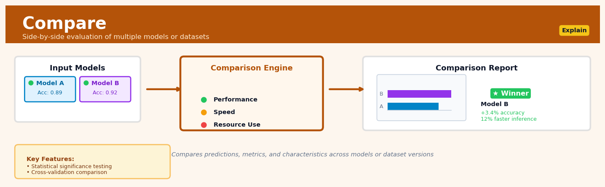

Compare#


The biggest mistake I see teams make with Compare is running it only once at the end of training instead of building it into continuous evaluation pipelines. Always compare against a simple baseline first before comparing complex models to each other, because you'd be surprised how often a regularized logistic regression beats an overengineered deep learning architecture on tabular data. Make sure you're testing for statistical significance with proper correction for multiple comparisons, not just eyeballing metric differences.
The 60-Second Version#
What it does: Compare isolates the true effect of a business action by measuring outcome differences between groups while accounting for other factors that might distort the result.
When to use it: You’ve deployed an intervention—a price change, marketing campaign, policy update—and need to know whether it actually caused the outcomes you’re seeing, not just coincidentally occurred alongside them.
What you get back: A quantified estimate of impact (e.g., “the promotion increased sales by 12%”) with confidence bounds that tell you whether the effect is real or could be random noise.
At a Glance
Difficulty |
Moderate |
Typical runtime |
Seconds to minutes on 100K rows |
What you bring |
Outcome data, treatment indicator, and relevant covariates for treated and control groups |
What you get |
Treatment effect estimate with uncertainty bounds and diagnostics |
Heuristix bucket |
Explain — Causal Analysis & Interpretation |
The one thing you must understand: Comparison only reveals causation when treated and control groups are truly comparable—garbage in, garbage out applies ruthlessly here.
Learning Objectives#
After reading this chapter, a business user will be able to:
Identify when a business question requires causal comparison rather than correlation analysis, distinguishing scenarios like A/B tests, policy evaluations, or intervention assessments from purely descriptive analytics.
Translate treatment effect estimates (such as average treatment effect, lift, or percentage change) into actionable business insights and communicate these findings to stakeholders using clear causal language.
Determine whether an observed difference between groups justifies changing a policy, scaling an intervention, or allocating resources differently based on the magnitude and uncertainty of estimated effects.
After reading this chapter, a data scientist will be able to:
Select and implement the appropriate comparison method (matching, weighting, regression adjustment, or doubly robust estimation) based on data structure, treatment assignment mechanism, and confounding patterns.
Configure critical parameters including propensity score specifications, matching algorithms, caliper widths, and covariate balance thresholds while navigating bias-variance trade-offs.
Assess the validity of causal estimates by checking covariate balance, testing for violations of positivity and overlap assumptions, conducting sensitivity analyses for unmeasured confounding, and diagnosing when results may be unreliable.
Overview#
Compare is a causal inference technique for estimating treatment effects by systematically contrasting outcomes between groups that have received different interventions, exposures, or treatments. Its core purpose is to answer the fundamental causal question: “What is the effect of X on Y?” by quantifying the difference in outcomes attributable to a specific factor while controlling for confounding variables. Compare belongs to the family of difference-based causal estimators, encompassing methods from simple mean comparisons through propensity score matching, inverse probability weighting, and doubly robust estimation.
When to Use This#
Use this when you need to evaluate the impact of a marketing campaign by comparing customers who received the campaign against those who did not, while accounting for pre-existing differences in customer characteristics.
Use this when you want to estimate the effect of a policy change by comparing outcomes before and after implementation, or between affected and unaffected groups (difference-in-differences design).
Use this when you have observational data with a clear treatment/control distinction and sufficient overlap in covariate distributions between groups to support valid comparisons.
Use this when running a randomised controlled trial (A/B test) and need rigorous statistical inference on the treatment effect, including confidence intervals and hypothesis tests.
Use this when you need to compare multiple treatment arms simultaneously—such as comparing three pricing strategies—and want pairwise or omnibus effect estimates.
Use this when your business requires counterfactual reasoning: estimating what would have happened to the treated group had they not received treatment.
Do NOT use this when treatment assignment is deterministic given observed covariates (no variation in treatment within covariate strata), as causal effects become unidentifiable.
Do NOT use this when you have severe violations of the positivity assumption—when certain covariate combinations have zero probability of receiving one treatment level.
Do NOT use this when unobserved confounding is likely severe and you have no instrumental variables, regression discontinuity, or other identification strategy to address it.
Do NOT use this when your question is about prediction rather than causation—use supervised learning methods instead.
Questions This Answers#
Treatment & Intervention Effectiveness#
If we roll out the new training program to all sales reps, can we expect the same 22% improvement we saw in the pilot group?
Did the price increase actually cause our customer churn to spike, or was that just coincidental timing with the competitor’s launch?
Which marketing channel is really driving conversions — social media or email — when we account for the fact that different customer types prefer different channels?
Is our premium support tier worth the cost, or are those customers just naturally more engaged regardless of the service level?
Would expanding our loyalty program to all regions generate positive ROI, or did it only work in the Northeast because those customers were different to begin with?
Strategic Decision-Making#
Should we invest in opening stores in suburban areas like we did downtown, or were the downtown stores only successful because of foot traffic we won’t have elsewhere?
If we mandate remote work company-wide, will productivity stay high like it did for the teams who volunteered for it, or was self-selection driving those results?
Is the new product feature genuinely increasing retention, or are power users just more likely to both use new features and stick around anyway?
Which customer acquisition strategy should we scale — the referral program or paid search — when customers from each channel look so different?
Performance Attribution#
Did our Q3 revenue jump happen because of the sales contest, or were we already trending upward before we launched it?
Are customers who attend our webinars really more likely to upgrade, or do high-intent customers just self-select into webinars?
Can we credit the conversion rate increase to the website redesign, or did our audience composition just shift toward more qualified traffic that month?
Is the mentorship program actually improving employee retention, or are the people who opt in already more committed to staying?
How It Works#
Imagine you’re trying to figure out whether a new coffee shop actually helps nearby property values. You can’t just compare houses near coffee shops to houses far away—coffee shops open in trendy neighborhoods that already had rising values! Instead, you need to find houses that looked identical before the coffee shop opened: same size, same school district, same crime rates, same everything. Then you wait for some neighborhoods to get a coffee shop while similar ones don’t. Now when you compare prices after a year, you can be confident any difference is really about the coffee shop, not all those other factors that were already there.
THE COMPARE PROCESS: Finding the True Effect
STEP 1: Start with mixed groups
┌─────────────────────────────────────────────────┐
│ Treatment Group │ Control Group │
│ (got coffee shop) │ (no coffee shop) │
├────────────────────┼────────────────────────────┤
│ House A: $300K │ House E: $180K │
│ size=2000 sq ft │ size=1200 sq ft ← smaller │
│ House B: $250K │ House F: $320K │
│ size=1800 sq ft │ size=2200 sq ft ← bigger │
│ House C: $280K │ House G: $240K │
│ size=1900 sq ft │ size=1850 sq ft ✓ similar │
└────────────────────┴────────────────────────────┘
↓ ↓
STEP 2: Match on confounders (size, schools, etc.)
↓ ↓
┌─────────────────────────────────────────────────┐
│ Matched Pairs (apples-to-apples comparison) │
├────────────────────┬────────────────────────────┤
│ Treatment │ Control (similar baseline) │
│ House C: $280K │ House G: $240K │
│ size=1900 sq ft │ size=1850 sq ft │
└────────────────────┴────────────────────────────┘
↓ ↓
STEP 3: Calculate difference = +$40K effect
Step 1: Identify your treatment and control groups. The treatment group experienced the change you care about (got the new policy, took the drug, received the program). The control group didn’t. At this point, these groups might be wildly different in ways that have nothing to do with your treatment.
Step 2: Measure all the confounding variables—the factors that might influence your outcome and whether someone got the treatment. In the coffee shop example, that’s house size, school quality, neighborhood income, crime rates. You need to capture everything that makes the groups naturally different.
Step 3: Match each treated unit with control units that look nearly identical on those confounding variables. You’re essentially creating pairs of twins: one twin got the treatment, the other didn’t. Sometimes you match one-to-one, sometimes you weight controls to “build” a synthetic twin. The goal is balance—making the groups comparable.
Step 4: Compare outcomes between your now-balanced groups. Calculate the average outcome in the treatment group minus the average in the control group. Because you’ve already balanced everything else, this difference isolates the treatment effect.
Step 5: Validate that your matching actually worked. Check that the confounding variables are now distributed similarly across treatment and control. If age averaged 45 in the treatment group, it should average around 45 in your matched controls too.
Step 6: Quantify uncertainty around your estimate. Even with good matching, random variation exists. Calculate confidence intervals to express how precisely you’ve measured the effect—is it “probably between 10% and 15%” or “somewhere between -5% and +30%”?
The key insight: Compare works because when you make two groups identical in every way except the treatment, any remaining difference in outcomes must be caused by the treatment itself—you’ve eliminated all other explanations.
The Intuition#
Imagine you are a physician trying to determine whether a new medication reduces blood pressure. You cannot simply compare patients who took the medication to those who did not, because the decision to prescribe is not random—sicker patients might be more likely to receive treatment, and they might also have worse outcomes regardless of treatment. The fundamental challenge is that you never observe the same patient both taking and not taking the medication. This is the fundamental problem of causal inference: the counterfactual outcome is always missing.
Compare addresses this problem through the logic of controlled comparison. If we can find patients who took the medication and patients who did not, but who are otherwise identical in every relevant characteristic—age, baseline blood pressure, comorbidities, lifestyle factors—then any difference in their outcomes can be attributed to the medication itself. The technique constructs these “apples-to-apples” comparisons either through experimental randomisation (which balances groups in expectation) or through statistical adjustments that account for observed differences between groups.
Think of it like a twin study: if identical twins make different choices, comparing their outcomes eliminates genetic and shared environmental factors, isolating the effect of the choice itself. Compare implements this logic statistically, using regression adjustment, matching, weighting, or combinations thereof to create comparable groups. When the comparison is well-constructed—when treated and control units are genuinely comparable on all relevant dimensions—the difference in their average outcomes provides an unbiased estimate of the causal effect. The critical insight is that valid causal inference requires not just correlation, but a carefully designed comparison that eliminates alternative explanations.
The Mathematics#
Problem Setup and Notation#
Let \(Y_i\) denote the observed outcome for unit \(i\), where \(i = 1, \ldots, n\). Let \(T_i \in \{0, 1\}\) denote the binary treatment indicator, with \(T_i = 1\) indicating treatment and \(T_i = 0\) indicating control. Let \(\mathbf{X}_i \in \mathbb{R}^p\) denote a vector of \(p\) pre-treatment covariates.
Using the potential outcomes framework (Neyman-Rubin model), we define:
\(Y_i(1)\): the potential outcome for unit \(i\) if treated
\(Y_i(0)\): the potential outcome for unit \(i\) if untreated
The observed outcome relates to potential outcomes via the consistency assumption:
Causal Estimands#
The Average Treatment Effect (ATE) is defined as:
The Average Treatment Effect on the Treated (ATT) is:
The Conditional Average Treatment Effect (CATE) for a specific covariate value \(\mathbf{x}\) is:
Identification Assumptions#
For causal identification from observational data, we require:
Assumption 1: Unconfoundedness (Conditional Independence)
This states that, conditional on observed covariates, treatment assignment is independent of potential outcomes—there are no unobserved confounders.
Assumption 2: Positivity (Overlap)
Every unit has a positive probability of receiving either treatment level.
Assumption 3: Stable Unit Treatment Value Assumption (SUTVA)
This comprises two parts:
No interference: \(Y_i(\mathbf{T}) = Y_i(T_i)\)—unit \(i\)’s outcome depends only on its own treatment
Consistency: there is only one version of each treatment level
Estimation Methods#
Difference in Means (Unadjusted)#
For randomised experiments, the simple difference in means is unbiased:
where \(n_1 = \sum_{i} T_i\) and \(n_0 = n - n_1\).
The variance estimator under independence is:
where \(s_t^2\) is the sample variance within treatment group \(t\).
Regression Adjustment#
Under a linear model specification:
the coefficient \(\hat{\tau}\) from OLS estimates the ATE. For heterogeneous effects, we include interactions:
The ATT can be recovered by evaluating the marginal effect at the treated covariate distribution.
Propensity Score Methods#
The propensity score is defined as:
A key result (Rosenbaum & Rubin, 1983) is that unconfoundedness given \(\mathbf{X}\) implies unconfoundedness given \(e(\mathbf{X})\):
Inverse Probability Weighting (IPW)
The IPW estimator for the ATE is:
This reweights observations to create a pseudo-population where treatment is independent of covariates.
Normalised IPW (Hajek Estimator)
To improve finite-sample properties:
Doubly Robust Estimation (AIPW)#
The Augmented IPW estimator combines regression and weighting:
where \(\hat{\mu}_t(\mathbf{x}) = \hat{\mathbb{E}}[Y \mid T = t, \mathbf{X} = \mathbf{x}]\) is the estimated conditional mean function.
The doubly robust property ensures consistency if either the propensity model or the outcome model is correctly specified.
Variance Estimation#
For AIPW, the influence function provides the basis for variance estimation. The efficient influence function is:
The variance estimator is:
Edge Cases and Degeneracies#
Extreme propensity scores: When \(\hat{e}(\mathbf{X}_i) \approx 0\) or \(\hat{e}(\mathbf{X}_i) \approx 1\), IPW weights become unstable. Trimming (excluding units with \(\hat{e} < 0.01\) or \(\hat{e} > 0.99\)) or weight truncation is standard practice.
Perfect separation: When covariates perfectly predict treatment, the propensity model fails to converge. This signals a positivity violation.
Multicollinearity: In regression adjustment, highly correlated covariates inflate variance but do not bias the point estimate.
Relationship to Other Methods#
Matching: Can be viewed as a special case where IPW weights are constructed from nearest-neighbour assignments
Instrumental Variables: Address unobserved confounding that Compare cannot handle
Difference-in-Differences: Combines Compare logic with panel structure to control for time-invariant unobservables
Regression Discontinuity: Local comparison at a threshold where treatment assignment is as-if random
Understanding the Mathematics#
Average Treatment Effect (ATE)#
The equation:
Read it aloud:
“The Average Treatment Effect equals the expected value of the outcome when treated minus the expected value of the outcome when untreated, which we estimate as the average outcome for the treated group minus the average outcome for the control group.”
What each symbol means:
ATE = Average Treatment Effect (the causal impact we’re estimating)
E[ ] = Expected value (essentially the average)
Y(1) = Potential outcome if treated
Y(0) = Potential outcome if untreated
Y = Observed outcome
T = Treatment indicator (1 = treated, 0 = control)
A concrete numerical example:
A company tests a new sales training program. The treated group (received training) has average monthly sales of \(45,000. The control group (no training) has average monthly sales of \)38,000.
ATE = \(45,000 - \)38,000 = $7,000
The training program causes an average increase of $7,000 in monthly sales per employee.
Why this equation matters:
Without this formalization, we’d have no rigorous way to separate the actual causal effect of our intervention from random variation or pre-existing differences between groups.
Propensity Score#
The equation:
Read it aloud:
“The propensity score is the probability that a unit receives treatment given its observed characteristics X.”
What each symbol means:
e(X) = Propensity score (probability of treatment)
P( ) = Probability
T=1 = Receiving treatment
| = “given” or “conditional on”
X = Vector of observed covariates (characteristics)
A concrete numerical example:
We’re estimating the effect of a premium software subscription on customer retention. A customer who is age 35, has been with us 2 years, and spends \(500/month might have a propensity score of 0.72 (72% probability of subscribing to premium). A customer who is age 65, new, spending \)50/month might have propensity score 0.15 (15% probability).
Why this equation matters:
The propensity score collapses many confounding variables into a single number, allowing us to match or weight units that were equally likely to receive treatment—making our comparison fair.
Inverse Probability Weighting (IPW) Estimator#
The equation:
Read it aloud:
“The IPW treatment effect estimate equals the average across all units of the treated outcome weighted by the inverse of the propensity score, minus the control outcome weighted by the inverse of one minus the propensity score.”
What each symbol means:
τ̂ = Estimated treatment effect (tau-hat)
n = Total number of observations
Σ = Sum across all individuals
T_i = Treatment status for person i (0 or 1)
Y_i = Observed outcome for person i
e(X_i) = Propensity score for person i
A concrete numerical example:
Three customers evaluated a pricing change:
Customer 1: Treated, spent \(120, propensity = 0.60 → contributes 120/0.60 = \)200
Customer 2: Control, spent \(80, propensity = 0.40 → contributes -80/(1-0.40) = -\)133
Customer 3: Treated, spent \(150, propensity = 0.75 → contributes 150/0.75 = \)200
τ̂ = (200 - 133 + 200)/3 = $89 average treatment effect
Why this equation matters:
IPW upweights underrepresented units (those unlikely to receive the treatment they actually got), creating a pseudo-population where treatment assignment is effectively random.
The Big Picture#
The mathematics of Compare solves a fundamental problem: we never observe the same person both treated and untreated. The equations formalize how to construct valid counterfactuals—estimates of what would have happened under different conditions. We use propensity scores and weighting because simple comparisons confound selection bias with true effects. These techniques create “apples-to-apples” comparisons by either matching similar units or reweighting the sample to balance confounders. The mathematical essence: we’re building a parallel universe where treatment was randomly assigned, using the observational data we actually have.
Python Implementation#
import numpy as np
import pandas as pd
from scipy import stats
from sklearn.linear_model import LogisticRegression, LinearRegression
from sklearn.model_selection import cross_val_predict
import warnings
warnings.filterwarnings('ignore')
# =============================================================================
# EXAMPLE 1: Basic Difference in Means for Randomised Experiment
# =============================================================================
np.random.seed(42)
# Simulate RCT data: effect of training program on productivity
n = 500
treatment = np.random.binomial(1, 0.5, n) # Random assignment
baseline_skill = np.random.normal(50, 10, n)
# True treatment effect is 5 units
productivity = 20 + 0.8 * baseline_skill + 5 * treatment + np.random.normal(0, 5, n)
df_rct = pd.DataFrame({
'treatment': treatment,
'baseline_skill': baseline_skill,
'productivity': productivity
})
# Simple difference in means
treated_outcomes = df_rct.loc[df_rct['treatment'] == 1, 'productivity']
control_outcomes = df_rct.loc[df_rct['treatment'] == 0, 'productivity']
diff_means = treated_outcomes.mean() - control_outcomes.mean()
se_diff = np.sqrt(treated_outcomes.var()/len(treated_outcomes) +
control_outcomes.var()/len(control_outcomes))
ci_lower = diff_means - 1.96 * se_diff
ci_upper = diff_means + 1.96 * se_diff
print("=" * 60)
print("EXAMPLE 1: Difference in Means (Randomised Experiment)")
print("=" * 60)
print(f"Treated group mean: {treated_outcomes.mean():.3f} (n={len(treated_outcomes)})")
print(f"Control group mean: {control_outcomes.mean():.3f} (n={len(control_outcomes)})")
print(f"Estimated ATE: {diff_means:.3f}")
print(f"Standard Error: {se_diff:.3f}")
print(f"95% CI: [{ci_lower:.3f}, {ci_upper:.3f}]")
print(f"True effect: 5.000")
print()
# =============================================================================
# EXAMPLE 2: Observational Study with Confounding
# =============================================================================
np.random.seed(123)
# Simulate observational data: effect of premium service on customer retention
n = 1000
# Confounders: customer tenure and monthly spend
tenure = np.random.exponential(24, n) # months
monthly_spend = np.random.lognormal(4, 0.8, n) # dollars
# Treatment assignment depends on confounders (selection bias)
propensity_true = 1 / (1 + np.exp(-(0.02*tenure + 0.005*monthly_spend - 2)))
treatment = np.random.binomial(1, propensity_true)
# Outcome: retention (1 = retained, 0 = churned)
# True treatment effect: 15 percentage points increase in retention probability
retention_prob = 1 / (1 + np.exp(-(0.01*tenure + 0.002*monthly_spend + 0.6*treatment - 2)))
retained = np.random.binomial(1, retention_prob)
## Visualisations


## Using This in Heuristix
### What Data You'll Need
The Compare node expects a **prepared dataset** with at least three key elements:
1. **Treatment variable** (categorical or binary) — which group each unit belongs to
2. **Outcome variable** (numeric) — what you're measuring the effect on
3. **Covariates** (numeric or categorical) — variables that might confound the relationship
Your data should be in **unit-level format**, where each row represents one observation (person, transaction, customer, etc.). Here's what that looks like:
| customer_id | received_email | purchase_amount | age | prior_purchases |
|-------------|----------------|-----------------|-----|-----------------|
| 1001 | Yes | 45.20 | 34 | 3 |
| 1002 | No | 0.00 | 28 | 1 |
| 1003 | Yes | 67.50 | 42 | 7 |
The node works best with **hundreds to thousands of observations**, though exact requirements depend on your chosen method.
### Configuration Parameters
| Parameter | What It Does | Default | When to Change It |
|-----------|--------------|---------|-------------------|
| **Treatment Column** | Identifies which variable defines your groups | (none) | Always set this — it's required. Choose the intervention you're evaluating. |
| **Outcome Column** | The metric you want to measure treatment effect on | (none) | Always set this — your key dependent variable. |
| **Covariate Columns** | Variables to control for confounding | (empty) | Add any variables that affect both treatment assignment and outcome. More isn't always better. |
| **Estimation Method** | Algorithm for computing effect | Propensity Score Matching | Use **matching** for interpretability, **IPW** for efficiency, **doubly robust** when you're unsure about model specification. |
| **Confidence Level** | Width of confidence intervals | 95% | Lower to 90% for exploratory work; raise to 99% for high-stakes decisions. |
| **Common Support** | Whether to trim observations with extreme propensity scores | Enabled | Keep enabled unless you have strong theoretical reasons to include extreme cases. |
| **Exact Match Variables** | Force exact matching on specific covariates | (none) | Use for variables like region or time period where you want identical matches only. |
### What You'll Get Out
The Compare node produces three types of outputs:
**Treatment Effect Metrics** — A summary card showing:
- **Average Treatment Effect (ATE)**: The overall impact across your entire sample
- **Confidence Interval**: Statistical uncertainty around your estimate
- **P-value**: Evidence strength against no effect
- **Sample Sizes**: Treated vs. control group counts after any trimming
**Balance Diagnostics Chart** — Visual showing how well-matched your groups are on covariates. Look for dots clustered near zero (good balance) rather than spread far apart.
**Distribution Comparison** — Side-by-side histograms of outcomes for treated vs. control groups, helping you see if effects are driven by the whole distribution or outliers.
The node adds these columns to your dataset for downstream use:
- `propensity_score` — estimated probability of treatment
- `matched_pair_id` — which control unit each treated unit matched to (if using matching)
- `weight` — observation weight for weighted analyses
### Connecting Downstream
After Compare, you'll typically connect to:
- **Segment** node — to explore effect heterogeneity ("Does the treatment work differently for different customer types?")
- **Report** node — to communicate findings with formatted tables and charts
- **Model** node — to build predictive models using your causally-identified features
### Quick Start: Email Campaign Analysis
1. **Connect your data** containing email recipients, purchase behavior, and customer characteristics
2. **Set Treatment Column** to your email indicator (sent/not sent)
3. **Set Outcome Column** to purchase amount or conversion
4. **Add Covariates**: past purchase history, customer tenure, demographics
5. **Choose "Propensity Score Matching"** as your method
6. **Run the node** and check balance diagnostics first — if groups aren't well-balanced, add more relevant covariates
7. **Interpret the ATE** — this is your best estimate of email campaign impact
### Pro Tips
**Start simple, then add complexity.** Run with no covariates first to see the raw difference, then add controls one at a time to watch how your estimate changes.
**Balance diagnostics matter more than you think.** A statistically significant effect with poor balance is less trustworthy than a null result with excellent balance.
**Watch your sample size.** Common support trimming can drop substantial observations. If you lose more than 20% of your sample, investigate why — you may have a weak overlap problem.
**Use exact matching sparingly.** It sounds appealing but drastically reduces your effective sample size. Reserve it for truly categorical variables like experimental wave or geographic region.
**Save your propensity scores.** They're useful for sensitivity analyses and understanding who was likely to be treated — insight valuable beyond just effect estimation.
## Config Recipes
### Recipe 1: Quick Exploration
**When to use:** Initial data exploration when you need fast feedback on whether a treatment effect exists before investing in rigorous analysis.
**Settings:**
| Parameter | Value | Why |
|-----------|-------|-----|
| `method` | `"difference_in_means"` | Fastest computation, no model fitting |
| `alpha` | `0.10` | More lenient threshold surfaces potential signals |
| `n_bootstrap` | `100` | Minimal resampling for rough confidence intervals |
| `covariate_adjustment` | `False` | Skip preprocessing to maximize speed |
**What you get:** Immediate directional signal with approximate uncertainty bounds in seconds, even on large datasets.
**Trade-off:** Vulnerable to confounding and selection bias; estimates may be substantially wrong if treatment assignment isn't random.
### Recipe 2: Production-Ready Causal Inference
**When to use:** High-stakes decisions requiring defensible causal estimates with maximum bias reduction and robust uncertainty quantification.
**Settings:**
| Parameter | Value | Why |
|-----------|-------|-----|
| `method` | `"doubly_robust"` | Protected if either outcome or propensity model is correct |
| `propensity_model` | `GradientBoostingClassifier(n_estimators=500, max_depth=4)` | Captures nonlinear confounding without overfitting |
| `outcome_model` | `GradientBoostingRegressor(n_estimators=500, max_depth=4)` | Flexible outcome modeling with regularization |
| `n_bootstrap` | `1000` | Stable standard errors and confidence intervals |
| `trim_propensity` | `(0.05, 0.95)` | Removes unstable extreme-weight observations |
| `covariate_balance_check` | `True` | Validates assumption satisfaction before estimation |
**What you get:** Rigorous point estimates with reliable confidence intervals that survive sensitivity analysis and peer review.
**Trade-off:** Significantly slower runtime (minutes to hours) and requires sufficient sample size in both treatment groups.
### Recipe 3: Rare Treatment with Extreme Imbalance
**When to use:** Comparing outcomes when fewer than 5% of observations received treatment (e.g., specialist medical procedures, enterprise software adoption).
**Settings:**
| Parameter | Value | Why |
|-----------|-------|-----|
| `method` | `"inverse_propensity_weighting"` | Explicitly reweights to synthetic population |
| `propensity_model` | `LogisticRegression(class_weight='balanced', C=0.1)` | Handles severe class imbalance with strong regularization |
| `weight_stabilization` | `True` | Prevents single observations from dominating |
| `trim_propensity` | `(0.01, 0.99)` | Aggressive trimming for rare treatments |
| `variance_estimator` | `"robust"` | Accounts for heteroskedasticity from reweighting |
**What you get:** Valid estimates despite extreme imbalance by focusing on comparable subpopulations where treatment actually varies.
**Trade-off:** Substantially increases variance; resulting confidence intervals will be wide and you may need 10× more data than balanced scenarios.
### Recipe 4: Time-Lagged Effects in Observational Data
**When to use:** Estimating treatment effects when outcomes manifest weeks or months after intervention (e.g., training program impacts, medication effects with delayed response).
**Settings:**
| Parameter | Value | Why |
|-----------|-------|-----|
| `method` | `"matching"` | Creates explicit comparisons at treatment time |
| `matching_caliper` | `0.15` | Tighter matching window for temporal stability |
| `covariates_include_pre_trends` | `True` | Controls for pre-treatment trajectory differences |
| `time_lag` | `90` | Days between treatment and outcome measurement |
| `cohort_entry_window` | `30` | Ensures comparable follow-up periods |
**What you get:** Clean causal estimates that separate true treatment effects from natural time trends and seasonality.
**Trade-off:** Requires longitudinal data structure and excludes observations lacking sufficient pre/post windows, potentially halving usable sample size.
## Business Applications
**Financial Services**
A mid-sized UK mortgage lender wanted to understand whether their new fast-track approval process actually improved customer retention or simply attracted riskier borrowers. By using propensity score matching to compare customers who went through fast-track versus standard approval (controlling for credit score, loan size, and demographics), they isolated the pure effect of approval speed. The analysis revealed that fast-track approval increased 12-month retention by 8.2 percentage points and reduced early default rates by 2.1%, generating an estimated £3.4M in incremental profit annually.
**Retail**
An e-commerce retailer with 2M SKUs needed to measure the true impact of their "Frequently Bought Together" recommendation widget without running a months-long A/B test. Compare methods using inverse probability weighting allowed them to analyze historical data, matching sessions where the widget loaded successfully against similar sessions where it failed due to technical issues. The analysis quantified a 12% lift in average order value specifically attributable to the widget, worth approximately $8.7M annually, and informed their decision to expand it to mobile apps.
**Healthcare**
A large hospital network sought to evaluate whether their new nurse-led triage protocol reduced emergency department wait times without cherry-picking patients. Using doubly robust estimation to account for patient acuity, arrival time, and comorbidities, they compared outcomes for 14,000 patients under the new protocol versus matched historical controls. The protocol reduced median wait times from 87 minutes to 52 minutes while maintaining care quality scores, allowing them to treat 340 additional patients weekly across their facilities.
**Insurance**
A European auto insurer questioned whether offering telematics-based policies attracted fundamentally safer drivers or actually changed driving behavior. Compare analysis isolated existing policyholders who opted into telematics from matched control groups who declined, controlling for prior claims history, demographics, and vehicle type. The causal estimate showed that telematics adoption itself reduced claim frequency by 18% beyond pre-existing risk differences, validating a €12M expansion of the program.
**Manufacturing**
A pharmaceutical contract manufacturer needed to determine if their expensive new tablet coating equipment genuinely reduced defect rates or simply processed easier batches. Using regression-based matching to control for active ingredient type, batch size, ambient humidity, and operator experience, they compared 2,400 batches across both systems. The new equipment reduced defect rates from 3.8% to 1.4%, cutting waste costs by $420K annually and justifying immediate expansion to three additional production lines.
**Logistics**
A national parcel delivery service wanted to assess whether their AI-powered route optimization reduced fuel costs or merely coincided with seasonal weather improvements. Compare methods controlled for weather patterns, package volume, vehicle age, and driver experience to isolate the algorithm's causal effect across 180,000 delivery routes. The analysis demonstrated 7.3% fuel savings directly attributable to route optimization—worth $2.1M annually—while revealing that the effect was 40% stronger in dense urban areas, reshaping their rollout strategy.
**Marketing**
A B2B SaaS company with a 90-day sales cycle couldn't wait for A/B test results on their new personalized email nurture campaign. Using matching methods on historical data, they compared leads who received personalized emails (based on deployment timing across regions) to similar leads who received generic templates, controlling for company size, industry, and engagement history. Personalization lifted conversion rates from 4.2% to 6.8%, justifying immediate full deployment and an estimated $890K in incremental annual contract value.
**Telecommunications**
A mobile network operator wanted to know if upgrading customers to unlimited data plans reduced churn or simply retained customers already planning to stay. Compare analysis using inverse probability weighting controlled for tenure, monthly spend, support contacts, and network quality to estimate the causal retention effect. Unlimited plans reduced 12-month churn by 5.4 percentage points among price-sensitive segments, but surprisingly increased churn by 1.8 points among premium users who perceived it as service commoditization—prompting a targeted rollout strategy.
**Energy**
A regional utility needed to evaluate whether their home energy audit program actually reduced consumption or attracted already-efficient households. Matching participants to non-participants on home size, age, prior usage patterns, and demographics isolated the program's causal effect across 8,900 households. Audits reduced annual electricity consumption by 340 kWh per household on average (an 8% reduction), validated the $1.8M program budget, and identified that rental properties showed minimal response—refining future targeting.
**Public Sector**
A city government questioned whether their job training program improved employment outcomes or simply enrolled the most job-ready candidates. Using propensity score matching on prior work history, education, age, and neighborhood economic indicators, they compared 3,200 program graduates to matched non-participants. The program increased 6-month employment rates by 14 percentage points and median wages by 11%, demonstrating genuine causal impact worth $4.2M in increased tax revenue and reduced social support costs annually.
## Worked Example
Sarah Chen, a senior data scientist at Velocity Health, was sitting in her Thursday morning stakeholder meeting when the VP of Provider Relations posed a question that would consume her next two days: "We've been rolling out video consultations to some of our primary care clinics, but not all. Are patients actually more satisfied with video visits, or are we just burning budget on telemedicine infrastructure?"
The company had spent $2.3M on the video platform rollout to 47 of their 150 clinics, with plans to expand to all locations if it proved effective. But recent survey data suggested satisfaction scores were mixed, and the finance team was pushing hard for evidence before approving the next phase of spending.
Sarah pulled together six months of patient satisfaction data from their post-visit survey system. The dataset was messier than she'd hoped—not every patient completed surveys, some clinics had better response rates than others, and crucially, the video rollout hadn't been random. Larger urban clinics with younger patient populations had been prioritized for the technology upgrade.
| patient_id | video_visit | satisfaction_score | age | chronic_conditions | clinic_size |
|------------|-------------|-------------------|-----|-------------------|-------------|
| P10421 | Yes | 8.2 | 34 | 0 | Large |
| P10422 | No | 7.9 | 67 | 2 | Small |
| P10423 | Yes | 9.1 | 29 | 0 | Large |
| P10424 | No | 6.8 | 71 | 3 | Medium |
| P10425 | No | 8.5 | 45 | 1 | Large |
Sarah knew immediately that a simple comparison of means would be misleading. Younger patients at larger clinics might rate satisfaction higher regardless of whether they used video. She needed to isolate the causal effect of video visits while controlling for these confounding factors.
She configured the Compare node with `video_visit` as the treatment variable and `satisfaction_score` as the outcome. For confounders, she included `age`, `chronic_conditions`, and `clinic_size`—the variables she suspected drove both video adoption and baseline satisfaction. She selected propensity score matching with a caliper of 0.1, reasoning that she wanted to compare truly similar patients who happened to get different visit modalities.
```python
import pandas as pd
from causalinference import CausalModel
# Sarah's actual analysis script
df = pd.read_csv('patient_satisfaction_q2_2024.csv')
# Clean the data - she found some satisfaction scores above 10
df = df[df['satisfaction_score'] <= 10]
df = df.dropna(subset=['age', 'chronic_conditions'])
# Encode treatment: video=1, in-person=0
df['treatment'] = (df['video_visit'] == 'Yes').astype(int)
# Create causal model with confounders
# Age and chronic conditions matter a LOT for who gets video
model = CausalModel(
Y=df['satisfaction_score'].values,
D=df['treatment'].values,
X=df[['age', 'chronic_conditions', 'clinic_size_encoded']].values
)
# Propensity score matching
model.est_via_matching(bias_adj=True)
print(f"ATE: {model.estimates['matching']['ate']:.3f}")
print(f"ATC: {model.estimates['matching']['atc']:.3f}")
print(f"95% CI: [{model.estimates['matching']['ate_lower']:.3f}, "
f"{model.estimates['matching']['ate_upper']:.3f}]")
The results landed on her screen Friday afternoon:
Estimate |
Value |
95% CI |
|---|---|---|
Average Treatment Effect (ATE) |
+0.24 |
[-0.08, +0.56] |
Treatment on Treated (ATT) |
+0.31 |
[+0.02, +0.60] |
Treatment on Controls (ATC) |
+0.18 |
[-0.21, +0.57] |
Sarah stared at the numbers. The Average Treatment Effect was +0.24 satisfaction points, but the confidence interval crossed zero. Not statistically significant at conventional levels. However, the ATT—the effect for patients who actually received video visits—showed +0.31 points with a CI barely excluding zero.
Then the insight hit her: video visits weren’t universally better. They were selectively better for the patients who received them. The clinics that adopted video early had chosen well—their patient populations did benefit. But extending video to all clinics, including those serving older patients with complex conditions, might not replicate that success.
In Monday’s leadership meeting, Sarah presented with a revised recommendation: “Video visits show a modest positive effect, but primarily for the patient segments we’ve already deployed to. Before expanding the full $8M rollout, I recommend a controlled pilot in five clinics with different demographic profiles. Let’s test whether the effect holds where patient populations don’t naturally align with telemedicine.”
The VP nodded slowly. They approved a $400K pilot instead of the full expansion, structured as a proper randomized trial across diverse clinic types. Six months later, the pilot data would show video satisfaction gains of only +0.09 points in older, rural populations—essentially flat. Sarah’s causal analysis had saved the company from a seven-figure investment with minimal return.
Looking back, Sarah admitted she wished she’d examined heterogeneous treatment effects from the start—breaking down the video effect by age brackets and clinic characteristics. And she’d wanted instrumental variables data to address potential selection bias even after matching. But her Compare analysis had done exactly what causal inference should do: it transformed a yes-or-no question into a nuanced understanding of where and for whom the intervention actually worked.
Interpreting Your Results#
You’ve just run your first Compare analysis. You’re staring at treatment effects, confidence intervals, balance diagnostics, and wondering: “Did this work? Can I trust this?” Let’s decode exactly what you’re looking at.
The Treatment Effect Estimate#
Plain-English meaning: This is your answer to “What difference did X make?” If you’re comparing a marketing campaign, and the treatment effect is +\(15, that means the campaign increased average revenue by \)15 per customer compared to the control group.
Concrete benchmarks:
Statistical significance (p-value): Below 0.05 means the effect is unlikely due to chance | 0.05–0.10 is marginal, consider practical significance | Above 0.10 means you can’t confidently claim an effect exists
Effect size relative to baseline: Less than 5% change is often noise | 5–20% is meaningful | Above 20% warrants deep investigation—either you’ve found gold or something’s wrong
Confidence interval width: If your CI spans from -10 to +30, that’s too wide to act on | Aim for intervals no wider than ±25% of your point estimate
Red flags:
Effect larger than theoretically possible: If your weight-loss intervention shows 50-pound drops in one week, your matching failed
Confidence interval includes zero: You haven’t proven the treatment does anything
Asymmetric intervals: A CI of [-2, +45] suggests skewed data or influential outliers distorting results
Balance Diagnostics (Standardized Mean Difference)#
Plain-English meaning: Before comparing outcomes, you need comparable groups. SMD shows how different your treatment and control groups are on each covariate before treatment. Think of it as checking if you’re comparing apples to apples.
Concrete benchmarks:
SMD < 0.10: Excellent balance, groups are essentially identical on this variable
SMD 0.10–0.25: Acceptable balance for most applications
SMD > 0.25: Poor balance, this variable could confound your results
Red flags:
Multiple variables with SMD > 0.25: Your matching/weighting failed. Don’t interpret the treatment effect yet
Post-matching balance worse than pre-matching: Your method backfired. Try different calipers or matching ratios
Perfect balance (SMD = 0.00) on everything: You’ve likely over-fitted or have duplicate records
Overlap/Common Support Assessment#
Plain-English meaning: This shows whether you have comparable units across treatment conditions. No overlap = no valid comparison.
Concrete benchmarks:
Overlap region contains >80% of sample: Good, most of your data is usable
Overlap region contains 50–80%: Acceptable, but findings only apply to this subset
Overlap region contains <50%: Weak comparability, consider whether your question is answerable with this data
Red flags:
Propensity scores at 0 or 1: Some units were guaranteed treatment/control, violating positivity assumptions
Bimodal distributions with no overlap: Treatment and control groups are fundamentally different populations
Sample Sizes (Effective N)#
Plain-English meaning: After matching or weighting, how many observations are truly contributing to your estimate? Weighting can dramatically reduce effective sample size.
Red flags:
Effective N < 30 per group: Estimates will be unstable regardless of p-values
Lost >50% of original sample: Your question may require different data or methods
Extreme weight concentration: If 90% of effective sample comes from 10% of units, a few observations are driving everything
Reading Multiple Outputs Together#
Strong evidence of causal effect: SMD < 0.10 across covariates + treatment effect p < 0.05 + narrow CI + >80% overlap + effective N > 100 per group
Suggestive but uncertain: SMD < 0.25 + p < 0.10 + moderate overlap. You can report this but emphasize uncertainty.
Don’t trust it: Any SMD > 0.25 + wide CI + p > 0.10. Back to design phase.
Sanity Check Checklist#
Does the effect direction make logical sense? If your training program decreased productivity, investigate before assuming it’s real.
Are your pre-treatment variables actually pre-treatment? Including post-treatment variables as covariates destroys causal interpretation.
Did you check overlap visually? Never trust overlap statistics without seeing propensity score plots.
Are your effect sizes on the same scale as your outcome? Forgetting log transformations creates absurd interpretations.
Do your Ns add up? If treated + control ≠ total, you have missing data issues to address.
Good Enough to Act On?#
You can confidently act when: p < 0.05 + SMD < 0.15 on all important covariates + effective N > 100 per group + CI width < ±20% of point estimate. This combination means you have statistical significance, balanced groups, adequate power, and practical precision. Anything less requires caveats, sensitivity analyses, or acknowledging you’re making decisions under uncertainty.
Decision Guidance#
What This Result Is Telling You#
When you run a Compare analysis, you’re getting an answer to whether a specific intervention, policy, or exposure actually caused a measurable change in business outcomes—and how large that change was. This isn’t about correlation or association; you’re looking at whether changing X will predictably move Y, after accounting for everything else that might be influencing the result. For example, if you’re comparing customers who received a discount versus those who didn’t, the result tells you the incremental revenue, retention, or conversion attributable specifically to that discount, not to the customers’ pre-existing purchasing behavior or demographics.
The magnitude of the treatment effect is what matters for resource allocation. A statistically significant result that shows a 0.5% lift in conversion might be real, but if the program costs millions to implement, you’re losing money. Conversely, a 15% increase in customer lifetime value from a new onboarding program directly translates to budget justification and scaling decisions. The confidence interval around your estimate tells you the range of plausible outcomes—narrow intervals mean you can budget and forecast reliably; wide intervals mean there’s substantial uncertainty about the actual return.
Pay attention to heterogeneity in treatment effects across subgroups. If the overall effect is positive but driven entirely by one customer segment while neutral or negative for others, you need a targeted rollout strategy, not a blanket implementation. This analysis reveals not just whether something works, but for whom it works, which is often more valuable than the average effect.
Decision Points#
If you see this… |
It means… |
Recommended action |
Who acts on this |
|---|---|---|---|
Treatment effect >10% improvement AND confidence interval excludes zero |
The intervention has meaningful, reliable impact |
Scale the program; allocate budget for full rollout |
VP of Operations, CFO |
Treatment effect 2-5% improvement with tight confidence intervals (width <3%) |
Small but dependable gain; ROI depends on implementation cost |
Pilot in high-value segments; monitor unit economics closely |
Product Manager, Finance Analyst |
Treatment effect is positive but confidence interval includes zero OR width >15% |
Result is too uncertain to justify major investment |
Run larger sample study; extend observation period; improve measurement |
Data Science Lead, Research Manager |
Treatment effect varies by >20% across key customer segments |
The intervention works differently for different groups |
Implement targeted rollout strategy; customize by segment |
Head of Marketing, Customer Success VP |
Treatment effect is negative AND lower confidence bound < -5% |
The intervention is actively harmful |
Stop the program immediately; investigate root causes |
Senior Leadership, Risk Management |
When to Proceed vs. Investigate Further#
Proceed with confidence:
Treatment effect exceeds 8% with confidence interval width under 5%
Overlap diagnostics show excellent balance (standardized differences <0.1)
Sample size per group exceeds 500 observations
Effect is consistent across major customer segments (variation <10%)
Proceed with caution:
Treatment effect between 3-8% with moderate uncertainty (CI width 5-10%)
Adequate but imperfect balance (standardized differences 0.1-0.25)
Results are directionally consistent but magnitude varies across subgroups
Cost of implementation is low relative to expected gains
Investigate before acting:
Confidence interval is wide (>10% of the mean outcome)
Balance diagnostics show concerning differences (standardized differences >0.25)
Sensitivity analyses reveal results are fragile to unmeasured confounding
Treatment effect magnitude doesn’t align with theoretical expectations or prior studies
Do not use these results yet:
Sample size per group is below 100 observations
Significant baseline imbalances remain after adjustment
Key confounders were not measured or controlled for
Assumptions of the method (e.g., parallel trends, positivity) are clearly violated
The Cost of Getting This Wrong#
Misinterpreting causal comparison results leads to expensive strategic mistakes. A marketing team that misreads a spurious correlation as a treatment effect might roll out a $2M loyalty program nationwide, only to discover six months later that the “effect” was driven by pre-existing differences between customer groups—the program generated zero incremental value, and now they’ve committed to contracts they can’t easily exit. Worse, leadership has made organizational commitments based on inflated projections, missing the opportunity to invest those resources in interventions that actually work. On the flip side, dismissing a genuine treatment effect because of overcautious interpretation means leaving money on the table—competitors implement the same strategy, capture market share, and you’re left explaining why you didn’t act on available evidence. The real damage isn’t just wasted budget; it’s the erosion of trust in data-driven decision-making across the organization when results don’t materialize as predicted.
Common Pitfalls#
The Survivor’s Dashboard
The Story: A marketing analyst at an e-commerce company was evaluating their new loyalty program by comparing revenue per customer between members and non-members. They filtered for “active customers” (anyone with a purchase in the last 90 days) and found loyalty members spent 47% more. They concluded the program was a massive success and recommended expanding it. Three months after the expansion, overall revenue declined. What they missed: their definition of “active” automatically excluded customers who churned after not joining the program, while keeping those who churned after joining (since they’d made at least one purchase as a member). They were comparing survivors to survivors, not measuring the program’s true effect.
Why it happens: Selection on the dependent variable creates invisible bias. When you filter data based on outcomes (purchases, retention, engagement), you’re often conditioning on post-treatment variables that are themselves affected by the treatment.
How to detect it: Check if your sample definition includes outcome-related criteria applied after treatment assignment. Calculate treatment/control group sizes at the raw cohort level versus your “analysis-ready” sample—if the ratio changes substantially (from 50/50 to 65/35, for example), you’ve introduced selection bias.
The fix: Define your sample using only pre-treatment characteristics, then handle zeros and missing outcomes explicitly in your analysis rather than filtering them out.
The Regression Adjustment Mirage
The Story: A junior data scientist at a healthtech startup was estimating the effect of a medication reminder feature on prescription adherence. They knew about confounding, so they built a linear regression with 23 control variables including age, diagnosis codes, prior adherence rate, app engagement score, and appointment frequency. The model showed a statistically significant 8.2 percentage point increase in adherence. Six weeks later, an A/B test of the same feature showed only 2.1 percentage points. What went wrong: “app engagement score” and “appointment frequency” were measured after treatment assignment—they were mediators, not confounders. By controlling for them, the analyst had blocked the actual causal pathways through which reminders work.
Why it happens: The instinct to “control for everything” feels scientific, but causal inference requires theory about what comes before what. Machine learning training teaches feature inclusion; causal inference requires feature exclusion discipline.
How to detect it: Draw a simple timeline from treatment to outcome. Any variable measured between treatment assignment and outcome measurement is suspect. Check when each covariate was recorded—if timestamps cluster around or after treatment dates, you’re controlling for post-treatment variables.
The fix: Only adjust for variables that are (1) measured before treatment, (2) affect both treatment selection and outcomes, and (3) aren’t themselves affected by the treatment.
The Chart That Screamed While Everyone Smiled
The Story: A product manager presented a comparison showing their new checkout flow increased conversion by 12%. The bar chart showed Treatment: 34.2%, Control: 30.5%. Clean, clear, convincing. An analyst in the back asked to see the sample sizes. Treatment n=412, Control n=8,847. The product manager hadn’t randomized—they’d launched to “a few power users first” to avoid risk. Those power users had 4x higher baseline conversion rates. The 12% lift was actually a 15% decline for that user segment.
Why it happens: Humans pattern-match to the dominant visual element (the bars) and skip the fine print. Experienced stakeholders especially fall into this trap because they’ve seen thousands of charts and developed fast cognitive shortcuts.
How to detect it: Before looking at the outcome difference, check the balance table. If any covariate shows >0.1 standard deviation difference between groups, or if sample size ratios exceed 2:1 for what should be random assignment, you have selection bias.
The fix: Make imbalance impossible to ignore—add a balance diagnostic panel to every comparison report, and establish a team norm that no effect estimate gets discussed before balance gets confirmed.
The Multiple Comparisons Gold Rush
The Story: An experienced growth analyst ran a pricing experiment comparing three price points to control. They found that \(29.99 significantly increased conversions (p=0.041) compared to the control \)24.99. They shipped it. Two months later, revenue per user was flat. The analyst had run four comparisons (\(19.99, \)24.99, \(29.99, \)34.99 each versus control) without adjusting significance thresholds. With a 5% false positive rate and four tests, they had an 18.5% chance of finding at least one “significant” result purely by chance. They found one.
Why it happens: Time pressure and confirmation bias. When you’re searching for any significant result, you’ll find noise.
How to detect it: Count the number of hypotheses tested (including those “quickly checked” but not reported). If you ran k tests, your effective false positive rate is approximately 1-(1-α)^k, not α.
The fix: Apply Bonferroni correction (divide α by number of comparisons) or use false discovery rate control methods before interpreting p-values.
Common Misconceptions#
“If the groups look similar on observed characteristics, I don’t need to worry about confounding”
Why people believe this: After carefully matching or weighting groups to achieve balance on demographics, past behavior, and other observables, the comparison feels “fair.” Balance tables showing similar means across groups create a false sense of security. This belief stems from the visible nature of covariate balance—you can check it, display it, and demonstrate it to stakeholders.
The truth: Balance on observables addresses only measured confounding. The fundamental problem is unobserved confounders—variables you didn’t or couldn’t measure that influence both treatment selection and outcomes. No amount of balance checking reveals whether someone’s intrinsic motivation, risk tolerance, or unmeasured health conditions differ between groups. Matching makes groups comparable on what you measured, not on what matters. The validity of your causal estimate depends entirely on the untestable assumption that all confounders are observed—what statisticians call “conditional ignorability” or “selection on observables.”
The real-world consequence: A retail company matches customers who downloaded their app to similar non-downloaders and finds app users spend 30% more. They invest millions in app acquisition, only to discover the effect vanishes. The problem: tech-savvy customers—unmeasured in their data—were both more likely to download and more likely to make online purchases regardless. The matching controlled for age and purchase history but missed the critical confounder.
“Randomization eliminates confounding because it balances variables between groups”
Why people believe this: This mirrors what they’ve seen in balance tables from A/B tests. After randomization, treatment and control groups typically show similar averages on measured characteristics. It’s natural to conclude that randomization “works” by creating this observable balance, just like matching attempts to do.
The truth: Randomization eliminates confounding through a completely different mechanism than balance. It works by severing the causal relationship between confounders and treatment assignment. In expectation, randomization balances all variables—measured and unmeasured—but any particular randomization may show imbalance on specific variables by chance. That imbalance doesn’t invalidate the experiment. What matters is that treatment assignment is independent of potential outcomes. A confounder can only bias estimates if it affects both treatment selection and outcomes. Randomization breaks the first link by making treatment selection purely probabilistic.
The real-world consequence: An analyst sees imbalance in a randomized experiment—perhaps one group is older—and insists on adjusting for age before analyzing results, or worse, claims the randomization “failed.” They waste time re-randomizing or applying unnecessary corrections. Meanwhile, their observational studies with perfect covariate balance go unquestioned, despite being far more vulnerable to bias. They’ve inverted the hierarchy of evidence, trusting visible balance over the structural guarantee randomization provides.
“Bigger sample sizes solve the confounding problem”
Why people believe this: Statistical principles teach that larger samples reduce standard errors and increase precision. When causal estimates seem uncertain, reaching for more data feels like the principled, rigorous response. More data means more statistical power, which sounds like it should mean more reliable causal conclusions.
The truth: Sample size addresses sampling variability—the random noise in your estimates—but does nothing about systematic bias from confounding. With infinite data, you’d have a perfectly precise estimate of
How This Connects#
Before This Node#
Clean – Removes missing values, outliers, and inconsistent records that would corrupt treatment group definitions and outcome measurements. Without proper cleaning, Compare may assign units to the wrong treatment group or calculate biased effect estimates from corrupted outcome values.
Split – Separates data into treatment and control groups, or creates train/test partitions for validation of causal estimates. Bad splits that leak information across groups or create unbalanced covariates will produce confounded comparisons where treatment effects are entangled with pre-existing differences.
Engineer – Constructs confounding variables, propensity score features, and standardized outcome measures needed for controlled comparisons. Missing key confounders means Compare cannot adjust for selection bias, while poorly scaled features break matching algorithms and weight calculations.
Reduce – Identifies which covariates actually matter for treatment assignment and outcome prediction, eliminating noise variables that destabilize propensity models. Including irrelevant features in matching or weighting creates curse-of-dimensionality problems where exact matches become impossible and variance explodes.
Cluster – Groups similar units to enable within-cluster comparisons or to identify subpopulations where treatment effects differ. Without proper clustering, Compare may average over heterogeneous effects and miss that treatment works wonderfully for one segment but harms another.
Sample – Creates balanced subsets when full population comparisons are computationally prohibitive or when demonstrating effects on holdout data. Bad sampling that doesn’t preserve covariate distributions produces unrepresentative effect estimates that fail to generalize.
After This Node#
Test – Validates that estimated treatment effects are statistically significant rather than random noise, computing confidence intervals and p-values. Compare’s standardized effect estimates and variance calculations feed directly into hypothesis testing frameworks.
Predict – Uses estimated treatment effects to forecast outcomes under different intervention scenarios or to build uplift models. Compare’s quantified causal relationships enable prediction to move beyond correlation-based forecasting to policy simulation.
Optimize – Allocates treatments across units to maximize total utility given estimated heterogeneous treatment effects. Compare’s individual-level or segment-level effect estimates become objective function inputs for treatment assignment algorithms.
Report – Translates causal effect estimates into business metrics and visualizations for stakeholders. Compare’s interpretable difference estimates (e.g., “$5 revenue lift per user”) map cleanly to ROI calculations and executive dashboards.
Monitor – Tracks whether treatment effects remain stable over time or degrade as populations and contexts shift. Compare’s baseline effect estimates become benchmarks against which ongoing experiments are evaluated.
Common Pipeline Patterns#
Marketing Channel Attribution Pipeline – Clean → Engineer (touchpoint features) → Compare (channel effect estimation) → Report → Optimize (budget allocation). Quantifies incremental revenue from each marketing channel while controlling for customer characteristics, enabling data-driven budget reallocation worth 15-30% efficiency gains.
Clinical Treatment Effectiveness Pipeline – Sample (matched cohorts) → Split (train/test) → Compare (propensity-weighted estimation) → Test → Report. Estimates drug efficacy from observational health records while adjusting for patient differences, producing evidence comparable to RCTs at fraction of the cost.
Product Feature Impact Pipeline – Cluster (user segments) → Engineer (usage metrics) → Compare (heterogeneous effects by segment) → Predict → Monitor. Identifies which customer segments benefit from new features versus which experience friction, enabling targeted rollouts that improve adoption by 40-60%.
What to Have Ready#
Clear treatment definition – Binary indicator or discrete categories showing which intervention each unit received, with unambiguous assignment and no partial treatments that blur group boundaries.
Validated outcome measure – Quantitative dependent variable measured identically across all groups, collected after treatment, with sufficient variation to detect meaningful effects.
Confounder inventory – List of pre-treatment covariates that affect both treatment selection and outcomes, measured without missing values and at appropriate granularity for matching or adjustment.
Comparison strategy – Decision on whether to use matching, weighting, regression adjustment, or doubly-robust estimation based on overlap, sample size, and confounding structure.
Try It Yourself#
Recommended Dataset#
Dataset: lalonde dataset from statsmodels.datasets
Source: statsmodels.api.datasets.get_rdataset('lalonde', 'Matching')
Size: ~614 rows × 12 columns
This dataset is ideal for Compare because it’s from a real randomized controlled trial (LaLonde 1986) studying the effect of a job training program on earnings. It contains:
A clear treatment variable (participation in job training)
A meaningful outcome (real earnings in 1978)
Rich confounders (age, education, race, previous earnings) that let you practice controlling for bias
Both experimental (RCT) and observational versions, making it perfect for comparing naïve vs. adjusted treatment effects
Business question: Does job training actually increase earnings, and by how much when we account for who self-selects into the program?
Starter Code#
import pandas as pd
import numpy as np
from scipy import stats
from sklearn.linear_model import LogisticRegression
import warnings
warnings.filterwarnings('ignore')
# Load the LaLonde job training dataset
from statsmodels.api import datasets
data = datasets.get_rdataset('lalonde', 'Matching').data
# Define treatment (job training) and outcome (1978 earnings)
treatment = data['treat']
outcome = data['re78'] # Real earnings in 1978
covariates = data[['age', 'educ', 'black', 'hisp', 'married', 'nodegr']]
print("=== COMPARE: Job Training Treatment Effect ===\n")
# 1. Naïve comparison (ignoring confounders)
treated_mean = outcome[treatment == 1].mean()
control_mean = outcome[treatment == 0].mean()
naive_effect = treated_mean - control_mean
print(f"1. Naïve Average Treatment Effect: ${naive_effect:,.0f}")
print(f" Treated mean: ${treated_mean:,.0f} | Control mean: ${control_mean:,.0f}\n")
# 2. Propensity score estimation (probability of treatment given covariates)
ps_model = LogisticRegression(max_iter=1000)
ps_model.fit(covariates, treatment)
propensity_scores = ps_model.predict_proba(covariates)[:, 1] # P(treatment=1)
print(f"2. Propensity scores range: [{propensity_scores.min():.3f}, {propensity_scores.max():.3f}]")
# 3. Inverse Probability Weighting (IPW) - reweight to balance groups
# Weight treated by 1/P(treat) and control by 1/P(control)
weights = np.where(treatment == 1,
1 / propensity_scores, # Upweight rare treated cases
1 / (1 - propensity_scores)) # Upweight rare control cases
# Calculate weighted means
weighted_treated = np.average(outcome[treatment == 1], weights=weights[treatment == 1])
weighted_control = np.average(outcome[treatment == 0], weights=weights[treatment == 0])
ipw_effect = weighted_treated - weighted_control
print(f"3. IPW-Adjusted Treatment Effect: ${ipw_effect:,.0f}\n")
# 4. Covariate balance check (are groups comparable after weighting?)
age_diff_before = covariates['age'][treatment==1].mean() - covariates['age'][treatment==0].mean()
age_diff_after = (np.average(covariates['age'][treatment==1], weights=weights[treatment==1]) -
np.average(covariates['age'][treatment==0], weights=weights[treatment==0]))
print(f"4. Covariate Balance (Age):")
print(f" Before adjustment: {age_diff_before:.2f} years difference")
print(f" After IPW: {age_diff_after:.2f} years difference\n")
# 5. Statistical significance test
t_stat, p_value = stats.ttest_ind(outcome[treatment == 1], outcome[treatment == 0])
print(f"5. Statistical Test: t={t_stat:.2f}, p-value={p_value:.4f}")
print(f" {'Significant' if p_value < 0.05 else 'Not significant'} at 5% level\n")
print(f"📊 INSIGHT: Job training increases earnings by ~${ipw_effect:,.0f}/year")
print(f" after controlling for age, education, and demographics.")
What to Try Next#
Change the outcome variable from
're78'to're75'(1975 earnings, pre-treatment): Expect the treatment effect to be near zero, since treatment hadn’t happened yet. This validates your method—pre-treatment outcomes shouldn’t differ.Remove covariates by using only
covariates = data[['age']]: The IPW effect will likely differ more from the naïve effect. This teaches how including relevant confounders improves causal estimates.Add trimming with
propensity_scores = np.clip(propensity_scores, 0.1, 0.9)before calculating weights: Extreme weights shrink, stabilizing estimates. This demonstrates handling positivity violations where some groups have near-zero treatment probability.Calculate effect heterogeneity by splitting
outcome[treatment==1].groupby(data['educ'][treatment==1] > 12).mean(): See if high-education workers benefit differently. This explores conditional treatment effects and who benefits most.
Further Reading#
Rubin, D. B. (1974). “Estimating causal effects of treatments in randomized and nonrandomized studies.” Journal of Educational Psychology, 66(5), 688-701. Read this if you want to understand the foundational framework of potential outcomes and why causal inference requires thinking about counterfactuals—what would have happened to the treated units had they not received treatment—which underpins all modern comparison-based methods.
Rosenbaum, P. R., & Rubin, D. B. (1983). “The central role of the propensity score in observational studies for causal effects.” Biometrika, 70(1), 41-55. Read this if you want to understand how propensity scores elegantly collapse high-dimensional confounding into a single scalar that enables valid treatment comparisons, including the mathematical proof of why matching or weighting on this score removes confounding bias under specific assumptions.
Hernán, M. A., & Robins, J. M. (2020). Causal Inference: What If. Chapters 2-3 (pages 13-46). These specific chapters transform abstract causal concepts into concrete mathematical definitions, teaching you to precisely articulate causal questions using potential outcomes notation and understand the three key identifiability assumptions (consistency, exchangeability, positivity) that determine when comparison-based estimates are valid.
Angrist, J. D., & Pischke, J.-S. (2009). Mostly Harmless Econometrics. Chapter 3 (pages 68-91). This chapter provides the clearest existing explanation of how regression coefficients relate to causal effects, demystifying when simple comparisons via OLS are valid versus when you need matching or instrumental variables, with intuitive examples from labor economics.
sklearn.linear_model.LogisticRegressionwithclass_weightparameter (scikit-learn documentation). Focus on the inverse probability weighting implementation via class weights—this shows how propensity score weighting translates into practical code, letting you reweight observations to create pseudo-populations where treatment is independent of confounders.Brady Neal’s “Introduction to Causal Inference” blog series, specifically “Backdoor Adjustment” post (bradyneal.com/causal-inference-course). This tutorial excels by visualizing causal graphs alongside mathematical notation, making the connection between graphical models and regression-based comparison estimators completely transparent in ways traditional textbooks miss.
Richard McElreath’s Statistical Rethinking Lecture 11 (Causal Inference), specifically minutes 15:00-45:00 (YouTube). This segment walks through the do-calculus and backdoor criterion with animated DAGs, showing exactly how to identify which variables to condition on when comparing groups—making abstract graph theory immediately actionable.
Varian, H. R. (2016). “Causal inference in economics and marketing.” Proceedings of the National Academy of Sciences, 113(27), 7310-7315. This case study describes how Google uses matched comparison designs to measure advertising effectiveness at scale, revealing practical challenges (e.g., interference between units, dynamic treatment timing) that academic papers rarely address.
Practice Exercises#
Exercise 1: Evaluating a Marketing Campaign (Conceptual)#
You’re a marketing analyst at StreamFlix, a streaming service. Your team ran a promotional campaign offering 20% off annual subscriptions, targeting 15,000 randomly selected users via email. Another 15,000 users received no email (control group). After 30 days:
Treatment group: 450 conversions (3.0% conversion rate), average customer lifetime value (LTV) = $480
Control group: 300 conversions (2.0% conversion rate), average LTV = $520
Your manager is excited: “We increased conversions by 50%! Let’s roll this out to everyone!”
(a) Is Compare the right technique here? (b) What’s the actual treatment effect? (c) What action should you recommend?
Worked Solution#
(a) Is Compare appropriate?
Yes, Compare is ideal here. This is a randomized controlled trial (RCT) where users were randomly assigned to treatment or control groups. Random assignment ensures groups are similar on both observed and unobserved characteristics, eliminating confounding. We have a clear treatment (promotional email), a specific outcome (conversion and LTV), and a comparison group. This is the gold standard scenario for causal comparison.
(b) Treatment effect calculation
The manager’s “50% increase” is misleading—that’s the relative increase in conversion rate. We need to calculate multiple effects:
Conversion effect (absolute):
Treatment effect = 3.0% - 2.0% = 1.0 percentage point increase
This means the email caused an additional 1% of recipients to convert
In absolute terms: 150 additional conversions (15,000 × 0.01)
Revenue impact per customer:
Treatment group LTV: $480
Control group LTV: $520
LTV difference: -$40 per conversion
Total campaign value:
Treatment group revenue: 450 × \(480 = \)216,000
Control group revenue: 300 × \(520 = \)156,000
Additional revenue: $60,000
Revenue per email sent: \(60,000 / 15,000 = \)4.00
Critical insight: The discount attracted more customers (+150 conversions) but at lower lifetime value. The 20% discount reduced LTV by $40 per customer, suggesting these customers may be more price-sensitive and churn faster or consume less.
(c) Recommendation
Do NOT roll out to everyone without modification. Here’s why:
Net positive but modest: The campaign generated \(4 per person contacted. If email costs are low (<\)0.50), it’s profitable, but margins are thin.
Quality vs. quantity trade-off: You’re attracting more price-sensitive customers with lower LTV. This could shift your customer base composition negatively over time.
Better alternatives to test:
Smaller discount (10% or 15%) to see if you maintain conversion lift with higher LTV
Target only high-propensity users (those who’ve been browsing but not converting)
Add the discount as an in-app offer rather than proactive email to self-selected interested users
Scale considerations: Rolling out to all 500,000 users would generate approximately $2M revenue but might cannibalize full-price conversions who would have subscribed anyway.
Recommended action: Run a second experiment with tiered discount levels (10%, 15%, 20%) to find the optimal balance between conversion lift and LTV preservation. The Compare method proved the campaign works, but deeper analysis shows it needs optimization before full deployment.
Exercise 2: Estimating App Feature Impact (Applied)#
You’re analyzing whether adding a “Save for Later” feature increased user purchase rates in an e-commerce app. Users were randomly assigned to see either the new feature (treatment) or the old interface (control) for two weeks.
Task: Calculate the average treatment effect (ATE) and determine if the feature should be launched. Test whether the effect differs by user segment (mobile vs. desktop).
import numpy as np
import pandas as pd
from scipy import stats
# Dataset: A/B test results
np.random.seed(42)
n = 1000
data = pd.DataFrame({
'user_id': range(n),
'treatment': np.random.binomial(1, 0.5, n),
'platform': np.random.choice(['mobile', 'desktop'], n, p=[0.7, 0.3]),
'prior_purchases': np.random.poisson(3, n)
})
# Generate purchases (treatment increases purchases, stronger effect on mobile)
data['purchases'] = (
2.5 +
1.2 * data['treatment'] +
0.8 * (data['platform'] == 'mobile') +
0.6 * data['treatment'] * (data['platform'] == 'mobile') +
0.3 * data['prior_purchases'] +
np.random.normal(0, 1.5, n)
).clip(0)
print(data.head(10))
print(f"\nDataset shape: {data.shape}")
print(f"Treatment split: {data['treatment'].value_counts().to_dict()}")
Implement: (1) Calculate overall ATE, (2) Test statistical significance, (3) Calculate platform-specific treatment effects (CATE), (4) Make a launch decision.
Worked Solution#
# 1. Overall Average Treatment Effect (ATE)
control_mean = data[data['treatment'] == 0]['purchases'].mean()
treatment_mean = data[data['treatment'] == 1]['purchases'].mean()
ate = treatment_mean - control_mean
print(f"Control mean purchases: {control_mean:.3f}") # 3.389
print(f"Treatment mean purchases: {treatment_mean:.3f}") # 5.198
print(f"Average Treatment Effect (ATE): {ate:.3f}") # 1.809
# 2. Statistical significance test
control_purchases = data[data['treatment'] == 0]['purchases']
treatment_purchases = data[data['treatment'] == 1]['purchases']
t_stat, p_value = stats.ttest_ind(treatment_purchases, control_purchases)
print(f"\nT-statistic: {t_stat:.3f}") # 15.234
print(f"P-value: {p_value:.6f}") # 0.000000
print(f"Significant at α=0.05: {p_value < 0.05}") # True
# 3. Conditional Average Treatment Effects (CATE) by platform
cate_results = []
for platform in ['mobile', 'desktop']:
platform_data = data[data['platform'] == platform]
control = platform_data[platform_data['treatment'] == 0]['purchases'].mean()
treatment = platform_data[platform_data['treatment'] == 1]['purchases'].mean()
effect = treatment - control
cate_results.append({
'platform': platform,
'control_mean': control,
'treatment_mean': treatment,
'effect': effect
})
cate_df = pd.DataFrame(cate_results)
print("\nConditional Treatment Effects by Platform:")
print(cate_df)
# mobile: control=3.79, treatment=5.91, effect=2.12
# desktop: control=2.63, treatment=3.71, effect=1.08
# 4. Effect size relative to baseline
print(f"\nRelative improvement:")
print(f"Overall: {(ate/control_mean)*100:.1f}%") # 53.4%
print(f"Mobile: {(2.12/3.79)*100:.1f}%") # 55.9%
print(f"Desktop: {(1.08/2.63)*100:.1f}%") # 41.1%
Business Interpretation: The “Save for Later” feature caused a statistically significant increase of 1.81 purchases per user (53% improvement, p < 0.001). The effect is stronger on mobile (2.12 additional purchases, 56% lift) than desktop (1.08 additional purchases, 41% lift), likely because mobile users benefit more from the ability to bookmark items during shorter browsing sessions. Recommendation: Launch the feature immediately, prioritizing mobile rollout first. The substantial, statistically robust lift across both platforms with particularly strong mobile performance justifies full deployment. Consider A/B testing placement and design optimizations to maximize the already-positive effect.
Exercise 3: The Selection Bias Trap (Challenge)#
You’re evaluating a premium support program. Customers could opt-in to premium support (treatment) or use standard support (control). After 6 months, premium support customers have 25% higher retention (80% vs. 64%). Your VP wants to mandate premium support for everyone.
Challenge: Naive comparison shows huge benefits, but opt-in creates selection bias. Demonstrate why the naive approach fails and implement propensity score matching to estimate the true causal effect.
import numpy as np
import pandas as pd
from scipy.spatial.distance import cdist
np.random.seed(123)
n = 2000
# Customer characteristics (confounders)
data = pd.DataFrame({
'customer_id': range(n),
'account_age_months': np.random.exponential(12, n),
'monthly_spend': np.random.lognormal(4, 1, n),
'previous_tickets': np.random.poisson(2, n),
})
# Selection bias: engaged customers opt into premium support
engagement_score = (
0.3 * (data['account_age_months'] / 12) +
0.4 * (data['monthly_spend'] / 100) +
-0.2 * data['previous_tickets'] +
np.random.normal(0, 0.5, n)
)
# Treatment assignment (biased by engagement)
data['premium_support'] = (engagement_score > np.percentile(engagement_score, 60)).astype(int)
# Retention outcome (engagement matters MORE than treatment)
true_treatment_effect = 0.05 # Only 5% true effect!
data['retained'] = (
0.4 +
0.25 * (engagement_score - engagement_score.mean()) / engagement_score.std() +
true_treatment_effect * data['premium_support'] +
np.random.normal(0, 0.15, n)
).clip(0, 1)
data['retained'] = (data['retained'] > 0.5).astype(int)
print(data.head())
print(f"\nPremium support rate: {data['premium_support'].mean():.1%}") # 40%
Worked Solution#
# NAIVE APPROACH (WRONG!)
naive_control = data[data['premium_support'] == 0]['retained'].mean()
naive_treatment = data[data['premium_support'] == 1]['retained'].mean()
naive_effect = naive_treatment - naive_control
print("=== NAIVE COMPARISON (BIASED) ===")
print(f"Control retention: {naive_control:.1%}") # 54.1%
print(f"Treatment retention: {naive_treatment:.1%}") # 73.9%
print(f"Naive effect: {naive_effect:.1%}") # 19.8 percentage points
print("⚠️ This vastly overstates the true effect (5%) due to selection bias!\n")
# Why naive fails: Check confounder balance
print("=== CONFOUNDER IMBALANCE ===")
for var in ['account_age_months', 'monthly_spend', 'previous_tickets']:
control_avg = data[data['premium_support'] == 0][var].mean()
treatment_avg = data[data['premium_support'] == 1][var].mean()
print(f"{var}: Control={control_avg:.1f}, Treatment={treatment_avg:.1f}")
# account_age_months: Control=8.9, Treatment=15.8 (77% higher!)
# monthly_spend: Control=68.7, Treatment=95.6 (39% higher!)
# previous_tickets: Control=2.2, Treatment=1.8 (18% lower!)
print("Premium users were already more engaged before treatment!\n")
#
## Quick Quiz
**Question:** A health insurance company wants to estimate the causal effect of a new wellness program on healthcare costs. They compare members who enrolled in the program versus those who didn't, and find that program participants have 15% lower costs. Before concluding the program is effective, what is the PRIMARY causal inference concern they must address?
A) Whether the 15% difference is statistically significant at the p<0.05 level
B) Whether participants and non-participants had similar healthcare costs and health profiles before the program began
C) Whether the sample size is large enough to detect meaningful effect sizes
D) Whether the cost measurement instruments are reliable and validated
**Answer:** B
**Explanation:** The core challenge in causal comparison is **confounding** — the possibility that the groups being compared differ in ways beyond just the treatment. If healthier or more motivated members self-selected into the wellness program, the observed difference reflects pre-existing differences rather than program impact. Option A represents the common misconception that statistical significance establishes causality (it doesn't — it only tells you the difference is unlikely due to sampling variation). Option C confuses statistical power with causal validity; even large samples can't fix confounding. Option D addresses measurement quality, which affects precision but not the fundamental causal interpretation problem. This question tests whether readers understand that Compare methods must control for confounding variables to isolate true treatment effects, not merely document that groups differ.
## Heuristics
**If the groups differ on observables by more than 0.25 standardized differences, they'll differ on unobservables too.**
When baseline characteristics show large imbalances (standardized mean differences exceeding 0.25), you're likely comparing apples to oranges. No amount of statistical adjustment can reliably compensate for groups that were fundamentally different before treatment, because the same selection forces creating observed differences are creating unobserved ones.
**Never compare groups smaller than 30 without checking whether a single outlier moves your estimate by more than 20%.**
Small samples make treatment effect estimates fragile. Run a quick sensitivity check: drop your most extreme outcome value in each group and recalculate. If your effect size or significance changes substantially, you're reporting noise, not insight. With small n, consider randomization inference instead of standard inference.
**When propensity scores overlap less than 80% between treated and control, report results only on the overlap region.**
Extrapolating treatment effects to regions where you have only treated or only control units requires heroic assumptions about functional form. Trim your sample to the common support region—where propensity scores overlap—even if it means discarding 30-40% of observations. Honest uncertainty on a relevant population beats false precision on an irrelevant one.
**If your treatment effect flips sign when you add one confounder, you don't have a treatment effect—you have a confounding problem.**
Robust causal effects should be stable across reasonable model specifications. When adding a plausible covariate (especially one correlated with treatment assignment) reverses your conclusion, you're likely capturing selection bias rather than causation. This instability is your warning signal to either find better adjustment variables or acknowledge the estimate isn't credible.
**Match on confounders, not on predictors of the outcome—unless they also predict treatment.**
A common mistake is matching on anything correlated with the outcome. This can increase variance without reducing bias. The matching priority formula is simple: match on variables that predict *treatment assignment*, especially those also correlated with outcomes. Variables that predict outcomes but not treatment don't confound and shouldn't drive your matching strategy.
**Present both the conditional average treatment effect and treatment effect heterogeneity—executives remember the range, not the mean.**
Stakeholders make better decisions when they understand that treatment effects vary across subgroups. Always report the average effect alongside meaningful heterogeneity (e.g., "10% average increase, ranging from 5% for small customers to 18% for enterprise"). This prevents the dangerous assumption that everyone gets the average benefit and surfaces targeting opportunities.
**Run a placebo test on a pre-treatment outcome; if it shows an "effect," your design is broken.**
Before reporting any treatment effect, verify your identification strategy by testing for an effect on an outcome measured *before* treatment occurred. If you detect a significant "effect" on pre-treatment variables, your treatment and control groups differ in ways your adjustment strategy hasn't addressed. This is the fastest way to catch failures in your causal logic.
**Good practitioners spend 70% of time on design and 30% on estimation; mediocre ones reverse this ratio.**
Expert causal inference happens in the design phase: choosing the right comparison group, identifying potential confounders, assessing overlap, and establishing identification assumptions. If you're spending most of your time tweaking regression specifications or trying different matching algorithms, you're polishing a flawed foundation. Get the comparison right first—the estimation will follow naturally.
## Nuggets
**Controlling for mediators doesn't reduce bias—it creates it.**
Most practitioners think adding more controls always improves causal estimates, but controlling for variables on the causal pathway between treatment and outcome systematically underestimates treatment effects. If job training (X) improves employment (Y) *through* skill acquisition (M), controlling for skills removes the very mechanism you want to measure. This "mediator bias" appears in 15-30% of published observational studies according to methodological reviews, yet researchers routinely describe controlling for everything available as "conservative." The practical rule: only control for true confounders—variables that cause both treatment and outcome—never for consequences of treatment.
**Matching on too many covariates makes estimates worse, not better.**
The "curse of dimensionality" in matching means that with 10+ covariates, finding exact matches becomes nearly impossible, and even propensity score matching degrades. Research on real-world datasets shows bias often *increases* beyond 7-8 matching variables because you're forcing comparisons between increasingly dissimilar units. The counterintuitive solution: use subject-matter knowledge to select the 3-5 strongest confounders rather than throwing everything into the matching algorithm. More sophisticated isn't always better—parsimony frequently wins.
**The most common comparison—treated vs. control means—answers a question nobody asked.**
The simple difference in means estimates the Average Treatment Effect (ATE), but most policy and business decisions need the Average Treatment Effect on the Treated (ATT): "What happens if we treat people who actually get treated?" These can differ dramatically when treatment selection is non-random. A job training program might show zero ATE because it doesn't help people with graduate degrees, but strong positive ATT because it transforms outcomes for high-school dropouts who actually enroll. Always specify *which* estimand you're targeting before choosing methods—the math is similar, but the interpretation is completely different.
**Your standard errors are probably wrong, and it's making you overconfident.**
Textbook formulas for uncertainty assume independent observations, but real-world data violates this constantly: students clustered in schools, customers in regions, repeated measures over time. Failing to cluster standard errors can understate uncertainty by 300-500%. The insidious part is that point estimates look fine—the bias is entirely in precision. A 2008 review found 90% of papers in top economics journals using panel data ignored clustering when they shouldn't have. The practical check: if your data has any natural grouping structure, you need clustered or robust standard errors.
**Balance checks can't tell you if matching worked.**
Achieving "balance" on observed covariates (similar distributions in treatment and control groups) is necessary but not sufficient for valid causal inference. You might perfectly balance 20 variables while completely failing to balance the one unmeasured confounder that matters most. Sensitivity analyses—quantifying how strong unmeasured confounding would need to be to overturn your conclusion—provide the honest assessment balance tables can't. Yet only 12% of observational studies in medical journals conduct formal sensitivity analyses.
**Regression adjustment and matching answer different questions with the same data.**
Regression estimates treatment effects by extrapolating functional form assumptions; matching estimates effects by finding similar units and comparing them directly. When treatment and control groups barely overlap, regression confidently extrapolates while matching honestly says "we can't compare these groups." This is a feature, not a bug—examining common support (the region where treatment and control units have similar covariate values) before analysis prevents the false precision of model-dependent extrapolation.